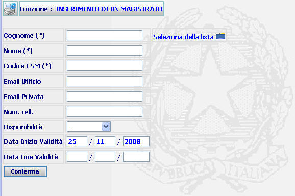
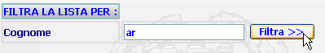

GENERALITA'
INSERIMENTO MAGISTRATO: La funzione consente
di aggiungere, per
l'ufficio di appartenenza dell'utente, un
nuovo magistrato facente parte del foro di
appartenenza dell'ufficio.
L'inserimento di un nuovo
magistrato consiste nel selezionare dalla lista il magistrato prescelto ed
eventualmente definire sia alcuni dati
identificativi del suo profilo quali la Email ed il telefono sia il periodo di
validità dei dati immessi.
ATTENZIONE:
Prima di iscrivere un magistrato è utile verificare se sia già presente tramite la funzione di
ricerca magistrati.
LE MASCHERE VIDEO
La funzione in
esame viene realizzata attraverso l'utilizzo della seguente maschera
che
riporta gli elementi
descrittivi e operativi dei
dati del magistrato:

I dati
contrassegnati con asterisco (*) non sono editabili ma vengono attualizzati solo
selezionando dalla lista il magistrato
prescelto.
COME FARE PER ...
Per inserire un magistrato l'utente deve:
-
Posizionarsi sulla
scheda Inserimento;
-
Selezionare dalla lista il
magistrato prescelto inserendo uno o più caratteri nella maschera
di filtro;

-
Inserire
opzionalmente gli altri dati tra cui il periodo di validità;
-
Confermare i dati
inseriti nella maschera agendo sul bottone
 . A fronte di questa
operazione
il magistrato viene inserito
e viene visualizzata la scheda del
Dettaglio
magistrato.
. A fronte di questa
operazione
il magistrato viene inserito
e viene visualizzata la scheda del
Dettaglio
magistrato.
CAMPI
I
dati che
consentono di definire
un nuovo utente sono i seguenti: